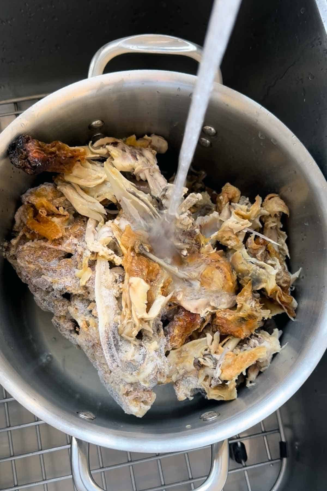
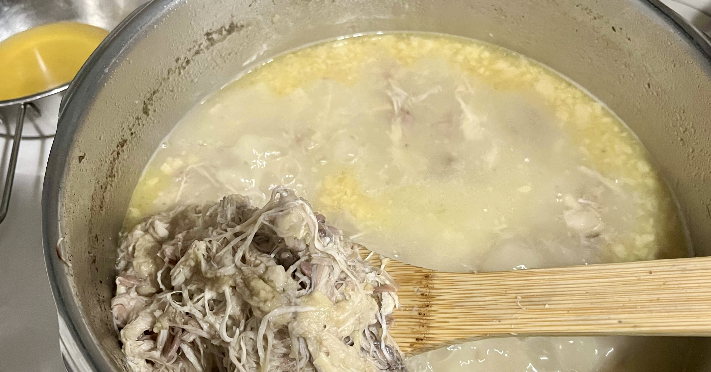
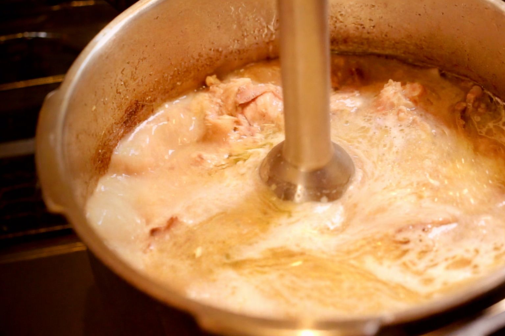
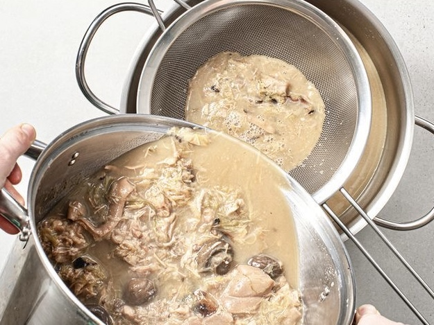

How We Make Our Paitan Soup

Chicken Carcass · Feet · Thigh · Whole Chicken
After yielding a refined clear broth, the spent chicken bones are never discarded. Fresh water is added, along with chicken feet, thigh meat, and when needed, whole chicken — drawing out every last note of marrow and collagen. This is where delicate clarity gives way to something bolder and more complex.

Fat Meets Water — Held Together by Craft
The milky-white color of paitan is the result of deliberate emulsification — fat and water unified through sustained heat. Chicken oil is added as needed to build body. As the broth thickens, it scorches easily, so our chefs stay close, stirring frequently and managing the heat with constant attention.

The Step No Home Kitchen Can Replicate
Rather than skimming the fat that rises to the surface, our chefs blend it directly into the broth using a hand blender — breaking fat droplets into a fine emulsion that becomes one with the soup. The result is a gleaming, velvety white liquid. This single step is the defining mark of a professionally crafted paitan.

Silky Smooth to the Last Drop
A measured addition of soy milk is stirred in and brought to a brief boil — softening the richness and rounding the flavor without masking the depth of the bone broth beneath. The broth is then passed through a fine-mesh strainer, removing any remaining solids to achieve a silky-smooth consistency.
Как мы готовим бульон Пайтан
Куриные каркасы · Лапки · Бёдра · Целая курица
После приготовления прозрачного бульона куриные кости никогда не выбрасываются. Добавляется свежая вода, куриные лапки, мясо бёдер, а при необходимости — целая курица. Так из костного мозга и коллагена извлекается всё до последней капли умами.
Жир и вода — объединённые мастерством
Молочно-белый цвет пайтана — результат намеренной эмульсификации жира и воды под воздействием сильного жара. При необходимости добавляется куриное масло. По мере загустения бульон легко пригорает, поэтому повара не отходят от плиты, постоянно помешивая и тщательно контролируя огонь.
Шаг, недоступный домашней кухне
Вместо того чтобы снимать жир с поверхности, повара вбивают его прямо в бульон погружным блендером — дробя капли жира в тонкую эмульсию, которая становится единым целым с супом. Результат — сияющая, бархатистая белая жидкость, недостижимая в домашних условиях.
Шелковистая гладкость до последней капли
Добавляется соевое молоко, бульон доводится до кратковременного кипения — это смягчает насыщенность и округляет вкус, не скрывая глубины костного бульона. Затем бульон тщательно процеживается через мелкое сито до шелковистой однородной консистенции.
Ինչպես ենք պատրաստում մեր Փայթան բուլյոնը
Հավի կմախք · Ոտքեր · Ազդրամիս · Ամբողջ հավ
Թափանցիկ բուլյոն ստանալուց հետո հավի ոսկորները երբեք չեն դեն նետվում։ Ավելացվում է թարմ ջուր, հավի ոտքեր, ազդրամիս, իսկ անհրաժեշտության դեպքում՝ ամբողջ հավ — ոսկրածուծից և կոլագենից քամելով ամեն կաթիլ ումամի։
Ճարպ և ջուր — միավորված վարպետությամբ
Փայթանի կաթնագույն սպիտակ երանգը դիտավորյալ էմուլսիֆիկացիայի արդյունք է՝ ճարպ և ջուր, որոնք միավորվում են ուժեղ ջերմության ազդեցությամբ։ Անհրաժեշտության դեպքում ավելացվում է հավի յուղ։ Երբ բուլյոնը խտանում է, հեշտ է այրվում, ուստի խոհարարները մշտապես կողքին են՝ հաճախ խառնելով և ուշադիր հսկելով կրակը։
Քայլ, որն անհասանելի է տնային խոհանոցին
Մակերեսից ճարպը հավաքելու փոխարեն խոհարարները ձեռքի բլենդերով այն ուղղակիորեն խառնում են բուլյոնի մեջ՝ ճարպի կաթիլները վերածելով նուրբ էմուլսիայի, որը միաձուլվում է ապուրին։ Արդյունքը փայլուն, թավշյա սպիտակ հեղուկ է, որն անկրկնելի է տնային պայմաններում։
Մետաքսյա հարթություն մինչև վերջին կաթիլ
Ավելացվում է սոյայի կաթ, բուլյոնը կարճ ժամանակով եռացվում է՝ մեղմելով հարստությունը և կլորացնելով համը՝ չծածկելով ոսկրային բուլյոնի խորությունը։ Այնուհետև բուլյոնը մանրակրկիտ քամվում է մանր մաղով՝ մետաքսյա հարթ կconsistency հասնելու համար։
白湯スープができるまで
鶏ガラ・もみじ・もも肉・丸鶏
清湯スープで丁寧に取り切った鶏ガラに、新たな水を加えて再び火にかける。もみじ（鶏足）や鶏もも肉、時には丸鶏をさらに加えることで、骨髄や軟骨に残る深い旨みを余すことなく引き出す。一番出汁の上品さとは異なる、力強く重厚なコクがここから生まれる。
脂と水を、職人の技で融合させる
白湯の白濁は、脂と水が均一に混ざり合った「乳化」の結果だ。必要に応じて鶏油を加えながら強火で煮込み続ける。乳化が進んで濃度が増すと鍋底が焦げやすくなるため、職人は常に鍋のそばで頻繁にかき混ぜながら火を管理する。
家庭では再現できない、プロの白湯
表面に浮かび上がった鶏油をあえて取り除かず、スープとともにハンドブレンダーで一気に攪拌する。脂とスープが細かく砕かれ、互いに溶け込むことで、白く輝くなめらかな乳化スープへと変貌する。このひと工程が、プロの白湯を決定づける。
絹のようななめらかさへ
最後に豆乳を加え、ひと煮立ちさせる。豆乳はスープに穏やかなコクとまろやかさを加えながら、過度な動物的重さを整える隠し味だ。仕上げに目の細かい漉し器で丁寧に漉すことで、舌触りに一切の雑味を残さない、絹のような白湯スープが完成する。